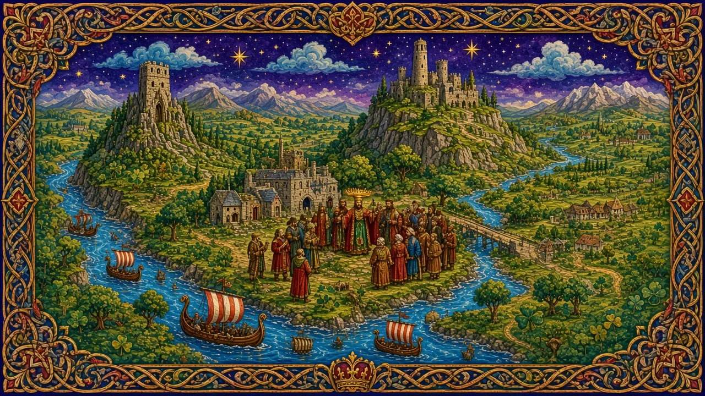
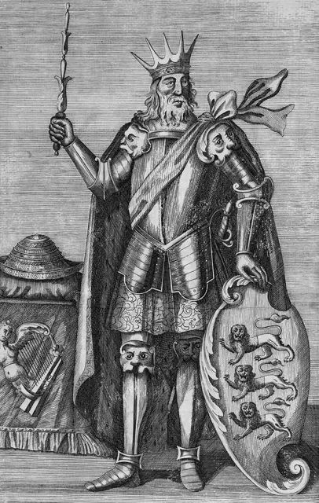

Other Early Dynasties
From the Dál gCais rose Brian Boru — the king who came closest to ruling all Ireland.
Ireland · Reigned to 1014 · Stop 87 of the odyssey
← Learning from the Past: An English Odyssey · ← The Eóganacht Kings · The Seven Kingdoms →

- Have you heard of Brian Boru?
- What is a harp a symbol of in Ireland?
- Can one battle change a country?
The words for today's story
Each new word is hidden in a sentence. Read it aloud and say what you think the bold word means from the rest of the sentence — then reveal it and see how close you were.
Now use them — out loud
- Using any four of these words, predict: what kind of reign do you think this will be — and how might it end?
- Which words belong to power and which to danger? Sort them out loud and say why.

_(crop).jpg){kind=link}
Credit: Unknown artist · via Wikimedia Commons, Public domain
The story, in three parts
Read each part. After it, there's a quick comprehension check (try the questions from memory first), then one thing to discuss.
Part 1 — The rise of Brian
The Dál gCais were a minor family in Thomond (around Clare) until the 10th century. Brian mac Cennétig, later called Brian Bóruma (Boru), and his brother Mathgamain took Cashel and the kingship of Munster. In 1002 the Uí Néill High King Máel Sechnaill submitted to Brian, who was now the most powerful king in Ireland.
1. Where were the Dál gCais from?
2. What happened in 1002?
1. Thomond, around Clare.
2. Máel Sechnaill submitted to Brian.
- Can outsiders break old power structures?
Part 2 — Emperor of the Irish
In 1005 Brian visited Armagh and a scribe wrote in the Book of Armagh that he was "Imperator Scotorum" — Emperor of the Irish. He tried to make the High Kingship a real power over the whole island, something no earlier king had fully achieved.
1. What did the scribe call him?
2. What did Brian try to do?
1. Imperator Scotorum, Emperor of the Irish.
2. Make the High Kingship real across Ireland.
- Why would a title in a holy book matter?
Part 3 — Clontarf, 1014
Leinster rebelled with the Norse of Dublin and allies from abroad. At Clontarf, near Dublin, on Good Friday 1014, Brian's army won — but the old king was killed, traditionally in his tent. Later stories made it a war of Irish against Vikings; in fact Irish and Norse fought on both sides.
1. Who rebelled against Brian?
2. Why is "Irish vs Vikings" too simple?
1. Leinster with the Norse of Dublin.
2. Irish and Norse fought on both sides.
- Why do people turn complex wars into simple stories?
Grammar — Third Conditional — What If?
History invites the great question: what if? The third conditional imagines a different past and its different result.
• Form: If + past perfect, would have + past participle.
• "If the wind had changed a day earlier, William would have landed first."
• Use might have / could have for less certainty.
1. Complete the conditional
Complete each sentence about Other Early Dynasties. Use the word in brackets.
1. If Brian (survive), he (found) a lasting monarchy.
2. If Máel Sechnaill (not submit), there (be) war.
3. If Leinster (not rebel), Clontarf (not happen).
1. had survived … might have founded
2. hadn't submitted … would have been
3. hadn't rebelled … wouldn't have happened
2. Mixed practice — what if?
1. He (not die) if he (stay) with his guards.
2. If his son (live), the O'Briens (be) stronger.
3. If the scribe (not write) it, we (not know) the title.
1. wouldn't have died … had stayed
2. had lived … would have been
3. hadn't written … wouldn't have known
Hold on to this — you'll need it in the Speak tab.
Going deeper
After Brian, other provincial dynasties competed for the High Kingship: the Uí Briain (O'Briens), the Uí Chonchobair of Connacht (O'Connors), the Mac Lochlainn of the north, and the Leinster kings. They were called "kings with opposition".
- Hero or ambitious upstart?
- Was Clontarf a victory?
- Who would continue your work?

Stop 87 on the journey → fig. In the Major System Palace, 87 is spelled with the sounds f-g, which make fig (a ripe purple fig).
Picture Brian Boru holding a giant green fig instead of a sword at Clontarf — stop 87.
You don't need the system to follow the story — it's simply a hook that lets you walk the whole odyssey, king by king, in order.
Speak
This is the heart of the lesson — do all of it out loud. The timer is there to keep you going: fill the time with detail rather than escaping it.
Tell the story of Other Early Dynasties in your own words, as if to someone who has never heard of them. Move through the arc: Dál gCais → Cashel → 1002 → Armagh → Clontarf → death.
Use today's grammar at least three times, and work in at least five key words (upstart, High King, submit, alliance, tent, myth, surname, emperor).
"Clontarf was a victory and a defeat." Discuss.
Tell a story from your own world — work, family, the news — that echoes this reign. Stuck for an idea? Pick one of these and run with it:
- A newcomer leader.
- A grand title.
- A simplified story.
- A succession plan.
To finish — the bigger questions
- What if Brian had lived?
- Who is your successor?
- Before you go — from memory: give two sentences about Other Early Dynasties using Third Conditional — What If?, and say what lesson from this reign you could use this week.
← Learning from the Past: An English Odyssey · ← The Eóganacht Kings · The Seven Kingdoms →